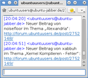

Kontrollzentrum
 An dieser Stelle findet man Hilfe und Hinweise zur Verwendung der Benutzereinstellungen und privater Nachrichten auf diesem Portal.
An dieser Stelle findet man Hilfe und Hinweise zur Verwendung der Benutzereinstellungen und privater Nachrichten auf diesem Portal.
Kontrollzentrum¶
Im Kontrollzentrum finden sich diverse Einstellungsmöglichkeiten. Standardmäßig wird die Seite "Übersicht" geöffnet. Diese enthält folgende Unterseiten:
Profil
Einstellungen
Passwort ändern
Abonnements
Konto deaktivieren
Profil¶
Einstellungen, die selbsterklärend sind, werden nicht aufgeführt.
Avatar¶
Über die Auswahlbox kann eine Bilddatei ausgewählt und hoch geladen werden, die im Forum und auf der Profilseite für jeden sichtbar angezeigt wird. Unterstützt werden eine Vielzahl an Bildformaten, das hochgeladene Bild muss lediglich den angegebenen Größenbeschränkungen entsprechen.
GPG-Schlüssel¶
Hier kann die Kennung eines GPG-Schlüssels angegeben werden, der auf einem öffentlichen Server liegt. Den entsprechenden Schlüssel erhält man mit dem Befehl:
gpg --list-keys EMAIL
wobei EMAIL mit der entsprechenden E-Mail Adresse ersetzt werden sollte. Beispiel:

Die markierte Stelle zeigt die Kennung, die für das entsprechende Feld benötigt wird.
Signatur¶
Wer Wert darauf legt, bestimmte Informationen automatisch unter jeden Diskussionsbeitrag erscheinen zu lassen, kann diese hier hinterlegen. Beim Inhalt bitte die Portalregeln beachten.
Benutzerseite¶
Jeder registrierte Benutzer von ubuntuusers.de kann das eigene Benutzerprofil ergänzen und und dieses mit Inhalt bzw. Text füllen (das Einbinden von Bildern ist nicht möglich). Auch hier wieder die Portalregeln beachten. Das Ergebnis steht - im Gegensatz zur Signatur - ausschließlich angemeldeten Mitgliedern über die allgemeine Adresse http://ubuntuusers.de/user/BENUTZERNAME/ zur Verfügung.
Das frühere Konzept einer eigenen Benutzerseite wurde Ende März 2015 aufgegeben.

Einstellungen¶
Benachrichtigungen¶
|  |
| Benachrichtigungen per Jabber |
Inyoka bietet eine Benachrichtigungsfunktion (Abonnementsverwaltung), die einen automatisch darüber informiert, ob z.B. eine neue Antwort in einem bestimmten Thema im Forum vorliegt. Möglich sind Benachrichtigungen per E-Mail oder XMPP (Jabber).
Um Benachrichtungen zu erhalten, müssen drei Bedingungen erfüllt sein:
Ein Abonnement muss vorliegen.
Eine Änderung (neuer Beitrag in einem Thema, Wiki-Seite wurde geändert, usw.) im abonnierten Bereich muss vorliegen.
Man muss das Thema / die Wiki-Seite seit der letzten Benachrichtigung besucht haben. (Letzteres gilt nicht für Foren. Hier erhält man für jedes neue Thema eine Benachrichtigung).
Wie kann ich ein Thema abonnieren?¶
| Portalbereich: | Man erhält Benachrichtigungen: | |
| Ein ganzes Forum | Nach  auf wird man über jedes neue Thema benachrichtigt. auf wird man über jedes neue Thema benachrichtigt. | |
| Einzelne Themen im Forum | Sobald man ein neues Thema eröffnet hat. Siehe dazu auch die entsprechende Option unter Forum (wenn „Thema bei Antwort automatisch abonnieren“ aktiviert ist) | |
| Sobald man in einem bereits bestehendem Thema eine Antwort geschrieben hat. Siehe dazu auch die entsprechende Option unter Forum (wenn „Thema bei Antwort automatisch abonnieren“ aktiviert ist) | ||
| Nach auf . | ||
| Wiki | Nach auf wird man bei Änderungen am Artikel informiert. | |
| Ikhaya-Kommentare | Nach auf wird man bei neuen Kommentaren im Artikel benachrichtigt. | |
Wann endet ein Abonnement?¶
Ein Abonnement bleibt so lange bestehen, bis man auf der jeweiligen Seite auf abbestellen klickt, oder es über die Seite Abonnements löscht.
Inyoka setzt aber bei bestimmten Ereignissen die Benachrichtigungsfunktion außer Kraft. So kann es passieren, das man zwar ein Thema abonniert hat, bei Änderungen aber keine Benachrichtigung erhält.
| Ereignis: | Auswirkung: |
| Man schaut ein abonniertes Thema trotz Benachrichtigung nicht mehr an. | Bei weiteren Antworten zu diesem Thema wird keine Benachrichtigung mehr verschickt. |
| Man liest ein abonniertes Thema, ohne sich im Portal angemeldet zu haben. | Man erhält keine Benachrichtigungen mehr über dieses Thema. |
Grundsätzlich kann man sagen, das man solange keine Benachrichtigungen mehr erhält, bis man dieses Thema wieder anschaut. Hierzu merkt sich Inyoka, welche Themen man gelesen hat und welche nicht.
Siehe auch: Abonnements.
Forum¶
| Option: | Funktion: |
| Thema bei Antwort automatisch abonnieren | Wenn man ein neues Thema erstellt oder antwortet, wird das entsprechende Thema automatisch abonniert. |
| Anhang-Vorschau im Forum aktivieren | Zeigt kleine Vorschaubilder anstatt eines Textes bei Anhängen im Forum. |
Passwort ändern¶
Hier kann man sein Passwort für ubuntuusers.de ändern. Es kann auch automatisch ein zufälliges Passwort generiert werden. Siehe auch: Generelles zu Passwörtern.
Abonnements¶
| Abos für: Forum-Thema, Ikhaya-Artikel, Wiki-Seite und Forum |
Hier lassen sich alle Abonnements für Foren, Themen, Ikhaya-Kommentare und Wikiseiten einsehen und man erhält eine schnellen Überblick. Es lassen sich auch die Benachrichtigungen wieder aktivieren, falls sie mal aus irgendeinem Grund "vergessen" wurden.
Sortierung:
Abonnements in denen Änderungen vorliegen, älteste zuerst
Abonnements ohne Änderungen, älteste zuerst
Unterhalb der Tabelle stehen u.a. folgende Bearbeitungsfunktionen zur Verfügung:
| Funktion: | Auswirkung: |
| Nur Abonnemnts mit Änderungen anzeigen | Es werden nur die Abonnements angezeigt, die man noch nicht gelesen hat. |
| Ausgewählte Abonnements als gelesen markieren | Ab sofort wird man wieder über Änderungen benachrichtigt. |
Siehe auch: Wie kann ich ein Thema abonnieren?
Benutzer deaktivieren¶
Wenn man nicht mehr auf ubuntuusers.de aktiv sein möchte, kann man hier den Benutzer löschen. Das Benutzerkonto wird daraufhin im Forum als „gelöscht” angezeigt und das Passwort wird als „ungültig” markiert sodass man sich nicht mehr einloggen kann. Weiterhin werden sämtliche Kontodaten wie Kontaktmöglichkeiten, Avatar oder die Signatur gelöscht. In der anschließend versendeten E-Mail erhält man einen Link mit dem man das Konto einen Monat lang reaktivieren kann.
Private Nachrichten¶
Achtung!
Bitte keine privaten Nachrichten mit Supportanfragen an Teammitglieder schicken! Dafür ist das öffentliche Forum gedacht.
Im Bereich "Private Nachrichten" lassen sich alle Privaten Nachrichten (abk.: "PN" oder auch "PM" für private message) verwalten.
Aktionen¶
Über die Aktionenspalte lassen sich verschiedene Aktionen wie das Archivieren von PNs durchführen.
![:[]](../_/b6f0f5cde943f633cfb6f56a5ab913586d21db15.png)
- Erstellt mit Inyoka
-
 2004 – 2017 ubuntuusers.de • Einige Rechte vorbehalten
2004 – 2017 ubuntuusers.de • Einige Rechte vorbehalten
Lizenz • Kontakt • Datenschutz • Impressum • Serverstatus -
Serverhousing gespendet von